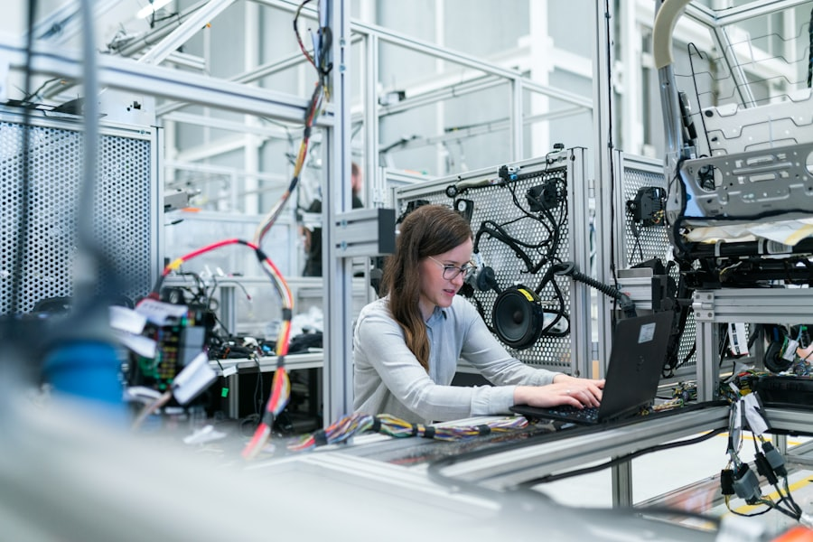
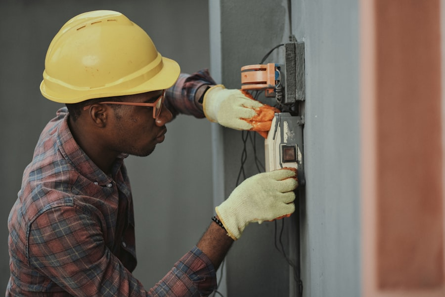
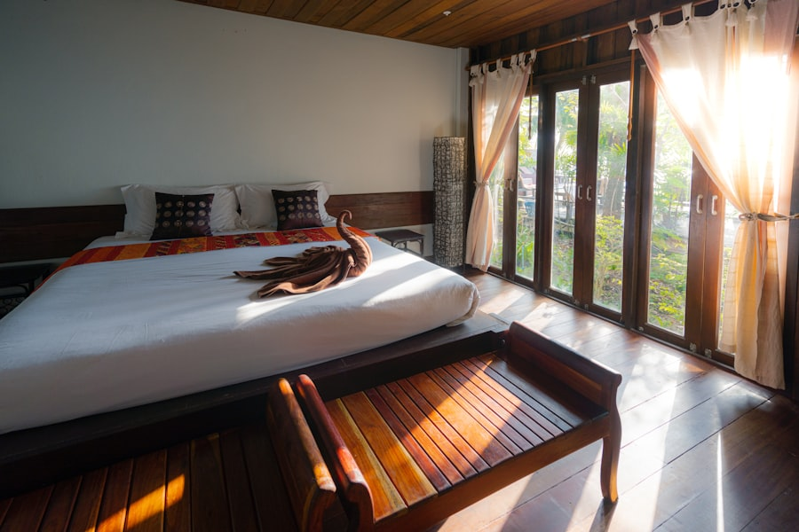

How to Choose the Right Borewell Location on Your Property
Discover how electrical resistivity survey meters, geological fault mapping, and distance from surface contaminants protect your water quality and guarantee optimal yield.
 Er. K. Natarajan
Borewell
Er. K. Natarajan
Borewell
How to Choose the Right Borewell Location
Groundwater resistivity techniques, fault line detection, and setback requirements from septic tanks.
Read Article → Borewell
Borewell
What Factors Affect Borewell Drilling Depth?
Why drilling depths vary between 350 and 1,200 feet based on crystalline bedrock strata and aquifer replenishment.
Read Article → Maintenance
Maintenance
Signs Your Borewell Needs Cleaning
Mud discharge, foul sulfur odors, sudden pressure drops, and pump overheating indicate fissure clogging.
Read Article →
PumpsSubmersible Pump vs Openwell Pump
A technical comparison on total dynamic head, horsepower efficiency, suction depth limits, and electrical costs.
Read Article →
MaintenanceHow Often Should a Borewell Be Maintained?
Recommended preventive flushing schedules, capacitor checkups, and water level monitoring intervals.
Read Article →
Water TestingUnderstanding Borewell Water Quality
Interpreting TDS, hardness, nitrates, fluorides, and choosing the right filtration or softening media.
Read Article →